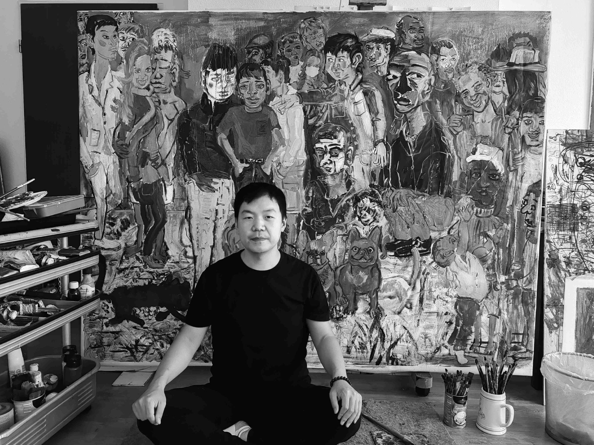

Artist based in Germany
Painting as a space between the visible and the inner world.
Shengpeng Song is a Chinese artist working primarily in painting. His practice explores figures, memory, vulnerability and moments of inner transformation.
Explore the gallery ↗The practice
Images emerge through an intuitive process of painting. Figures, light and texture open a quiet space for reflection, allowing each work to hold more than one meaning.
Read the biography and artist statement ↗